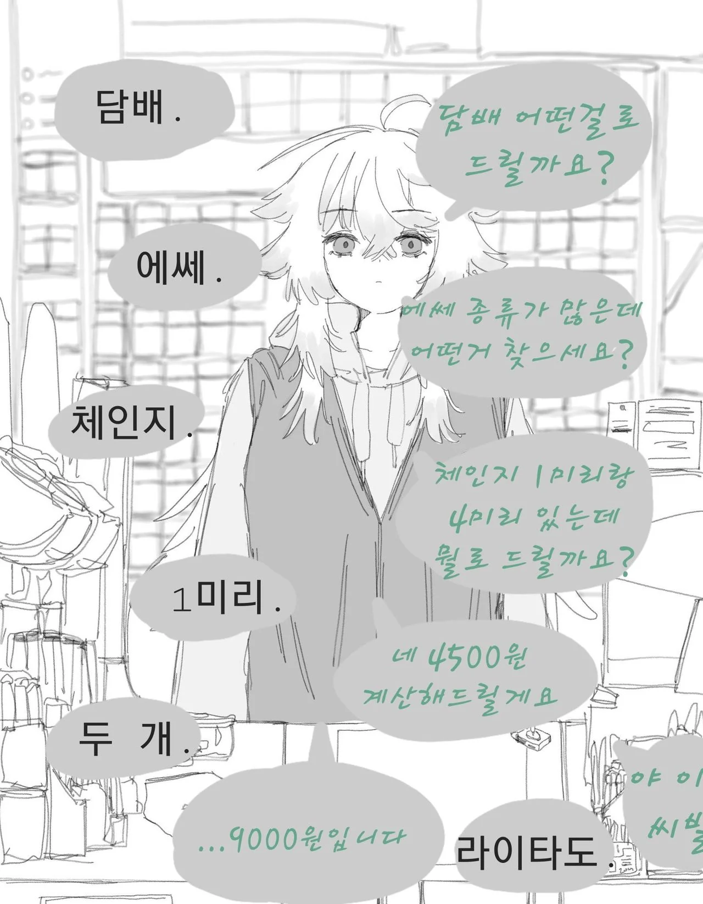

담배 줘.manwha
댓글
아 카드 두고왔네
아~ 애미가 낳다가 6번 조였나 6번을 나눠서 주문하네~
아직멀었네
그림바꿔줘랑 계산하고 카운터앞에서 바로 비닐뜯어서 땅바닥에 바로 버리기 매장안에 담배 피면서 들어오기를 못봤구나
라이터도 하나하나 틱틱 켜보면서 고르기 ㅇㄷ
ㅋㅋ 그림바꿔줘 어디갔어
시발 ㅋㅋㅋㅋㅋㅋ
그림 바꿔줘 추가로 검수자 이름 여자여야 하는 새끼도 있었음
옛날에 알바할 때 저런 건 괜찮은데
그보다는 봉투값 받는다니까 화내면서 20분 동안 욕하던 것이 더 짜증남
스무고개 고만해
이제 라이터한번쓰고 환불까지해야함
흡연자 상대로 장사하는게 쉽지않음